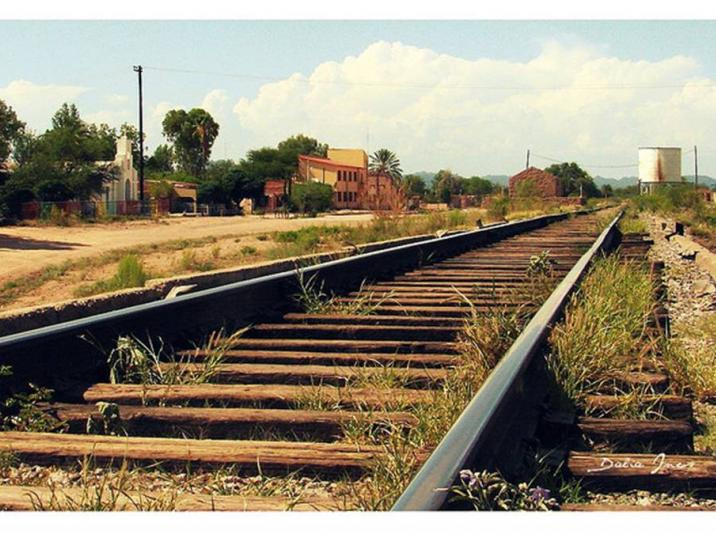

Vías Verdes México

Vías Verdes México es un programa nacional que tiene por eje la preservación del patrimonio cultural ferroviario en su propio contexto y que rescata las antiguas vías del tren mediante su aprovechamiento como infraestructura cultural y para desplazamientos no motorizados que promueven el turismo cultural y natural, el transporte urbano sustentable, el tránsito rural, la recreación y los ambientes saludables, trayendo consecuencias benéficas en términos de desarrollo social y sustentabilidad.
Para Vías Verdes México, el patrimonio ferroviario da sentido y dirección a los proyectos de reutilización en una experiencia significativa al tiempo que promueve el turismo activo en contacto con el patrimonio industrial y el entorno humano, en el disfrute de los antiguos caminos del tren así como del paisaje cultural.
La iniciativa de emprender el programa Vías verdes atiende a una necesidad global y tiene por referencia casos exitosos de programas internacionales con acciones de conservación y reutilización del patrimonio ferroviario para la formación de una cultura ferrocarrilera contemporánea.
Con más de diez años de existencia el Programa de Vías Verdes México ha ganado presencia no sólo en nuestro país si no en el extranjero.
Organismos como la Asociación Europea de Vías Verdes, la Fundación de los Ferrocarriles Españoles, Sustrans-Inglaterra, Rails to Trails Conservancy- Estados Unidos de Norteamérica y Velo Quebec-Cánada, apoyan y colaboran desde hace años con esta institución para el desarrollo del programa.
Rails to Trail EEUU
Sustrans UK
Veló Québec Canadá
Véloroutes Voies Vertes Francia
Seminarios
Vías Verdes México desarrolla seminarios, coloquios y encuentros académicos nacionales e internacionales que posibilitan el diálogo, la difusión y la revisión para la investigación técnica, histórica y documental de todos sus proyectos.
Marco Normativo
Ley Federal sobre Monumentos y Zonas Arqueológicos, Artísticos e Históricos
Reglamento de la Ley Federal sobre Monumentos y Zonas Arqueológicos, Artísticos e Históricos
Contacto: Lucina Rangel Vargas
Jefa del Departamento de Monumentos Artísticos e Históricos
Tel: (55) 41 55 05 40
viasverdesmexico@conaculta.gob.mx
Facebook: Vías Verdes México
Twitter: @ViasVerdesMx